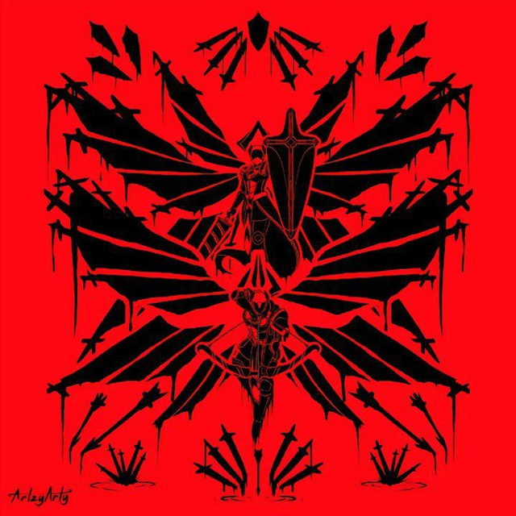

Привіт! Мене звати Сергій, я студент і великий шанувальник аніме "Президент студентської ради — покоївка!".
Я створив цей сайт, щоб поділитися своїм захопленням і розповісти більше про улюблене аніме. Це мій навчальний проєкт, в якому я практикував HTML, CSS, JavaScript і jQuery.
Сподіваюсь, вам сподобалося переглядати мій сайт так само, як мені створювати його :)
***************************************
